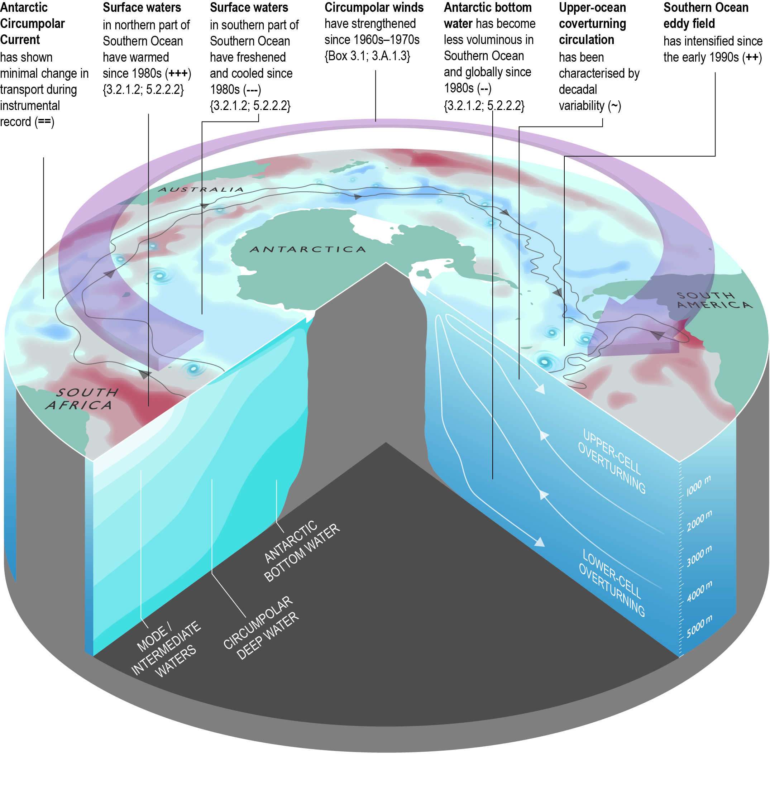
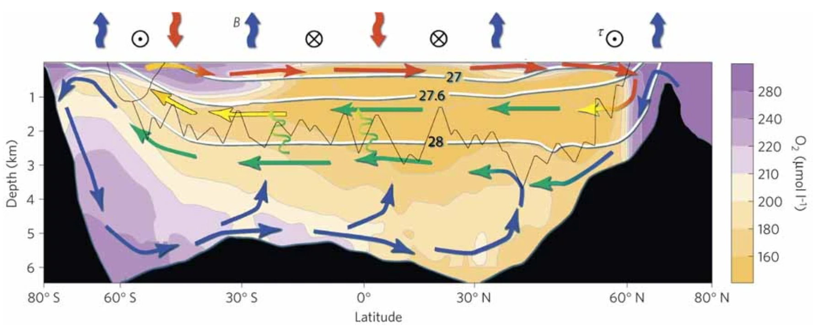

南極海のダイナミクス ー 変わりゆく地球気候に対して、どう応答するか？
南極海（Southern Ocean、南大洋とも）は、南極大陸をぐるりと取り囲む海で、地球の気候システムにとって極めて重要な役割を果たしています。例えば、人間活動に伴う熱の75%、CO2の40%は南極海によって吸収されています。地球上で唯一、東西方向に境界がなく、南極大陸を一周する海であり、太平洋や大西洋よりも広い面積を誇ります。南極海は、強い海流、強風、大きな波が特徴であり、夏でも海氷が存在するため、現場観測が非常に困難で、いまだ多くの謎に包まれた領域です。
近年、南極海は水温、塩分、海氷の劇的な変化を経ており、これらは気候変動に関係しています。地球温暖化が進む中、南極海は他の海洋よりも速く温暖化しており、過去半世紀で0.5-1℃程度の温度上昇が観測されています。
IPCC SROCC (2019)
これらの変化を引き起こす主要なメカニズムは、南極海を占める「南極周極流 Antarctic Circumpolar Current」に関係しています。この海流は、南極の周りを東向きに流れ、冷たい南極沿岸を暖かい赤道域の海から隔てるバリアとなっています。しかし、南極周極流の強度や位置は、風のパターン、海洋渦の活動など、さまざまな要因に影響され、変動します。
南極海の変化は、世界の気候にも大きな影響を与えます。たとえば、南極海は大気中の二酸化炭素を最も多く吸収する海域ですが、海洋が温暖化すると、二酸化炭素を吸収する能力が低下し、大気中の温室効果ガスの増加が加速する恐れがあります。
したがって、南極海とその気候変動への反応を理解することは、地球温暖化の影響を予測し、緩和するために重要です。私たちの研究は、南極海のダイナミクスと、それに関連した海洋-大気-氷河システムの相互作用の理解を目指しています。
British Antarctic Survey
海洋子午面循環 - 南極沿岸で冷やされた海水は、大西洋・インド洋・太平洋の津々浦々を旅する
「海洋子午面循環 Meridional Overturning Circulation」、または海洋コンベアベルトとしても知られるシステムは、地球上で熱と物質を再分配するための重要な仕組みです。南極沿岸で形成された最も密度の高い海水は、大西洋、インド洋、太平洋へと北に向かって流れ出すことで、海洋子午面循環を維持するための中心的な役割を担っています。
このプロセスは、南極大陸の冷たい「カタバ風」が海面に吹き付けることで海氷が形成され、その周囲の海水から高塩分・高密度な水が排出されることから始まります。そこで形成された塩分が高く冷たい南極沿岸の水は、海底へと沈み込み、やがて南極底層水として知られる水塊が形成されます。
高密度水の沈み込みと南極底層水の形成は、海洋の南北方向の循環を駆動します。この水は海洋底を北へと流れ、最終的に三つの大洋の盆地に達します。そこで、この水が運んでいた熱と溶解物が再分配され、長期的な気候パターンに影響を与えます。これが、海洋子午面循環の概略です。
Marshall and Speer (2012, Nature Geoscience)
ところが、最近の研究によると、地球温暖化の進行に伴って海洋子午面循環が停滞する可能性が指摘されています。地球温暖化が進むと、グリーンランドと南極の氷床の融解により、大量の淡水が海洋へと流入し、海洋の塩分を下げて水を軽くすることで、沈み込みの能力が低下する恐れがあります。こうした変化は現場観測からも示唆されており、全球の気候パターンや海洋生態系に重大な影響を与える可能性があります。
Li et al. (2023, Nature)
海洋子午面循環とその潜在的な影響をより良く理解するために、私たちは海洋現場観測、数値シミュレーション、衛星観測データ等を組み合わせて研究しています。このシステムについて研究することは、海洋循環の変化が、数十年から数千年単位の気候変動に対して、どう影響するかを理解することにつながります。
関連研究
- Yamazaki, K., Aoki, S., Katsumata, K., Hirano, D., & Nakayama, Y. (2021). Multidecadal poleward shift of the southern boundary of the Antarctic Circumpolar Current off East Antarctica. Science Advances, 7(24), eabf8755.
- Aoki, S., Yamazaki, K., Hirano, D., Katsumata, K., Shimada, K., Kitade, Y., ... & Murase, H. (2020). Reversal of freshening trend of Antarctic Bottom Water in the Australian-Antarctic Basin during 2010s. Scientific reports, 10(1), 14415.
- Yamazaki, K., Aoki, S., & Mizobata, K. (2023). Diffusion of Circumpolar Deep Water towards Antarctica. Journal of Geophysical Research: Oceans, 128(2), e2022JC019422.
- Yamazaki, K., Katsumata, K., Hirano, D., Nomura, D., Sasaki, H., Murase, H., & Aoki, S. (2024). Revisiting circulation and water masses over the East Antarctic margin (80–150° E). Progress in Oceanography, 103285.
- Yamazaki, K., Foppert, A., Gunn, K. L., Kashiwase, H., Rintoul, S. R., Neme, J., ... & Herraiz-Borreguero, L. (2026). Emerging outflow of not-so-dense shelf water from an East Antarctic polynya. Communications Earth & Environment, 7(1), 38.